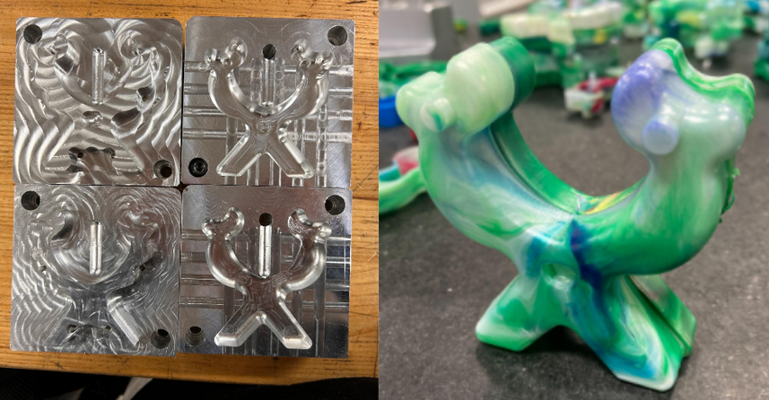

Background
This project challenged our team to design and manufacture a small figurine that would function as
an entertaining toy while demonstrating mastery of injection molding processes. The "Goober" figurine
was designed to serve as an interactive rubber band slingshot, combining playful aesthetics with
practical functionality.
The project encompassed the entire product development lifecycle, from initial concept sketches
through final quality analysis. Success would be measured by slingshot performance, manufacturing
feasibility, dimensional accuracy, and the aesthetic appeal that would make the figurine engaging
and fun to use.

Completed injection mold tooling alongside finished Goober figurine parts
Design Process
Concept Development
The design process began with ideation sketches emphasizing a space and extraterrestrial theme
to create an engaging, playful character. Through iterative development, we arrived at a compact
Y-shaped form that effectively integrated slingshot functionality while maintaining the fun,
alien aesthetic that would appeal to users.
Key design features included upward-sloped eyebrows and divots under the eyes for secure rubber
band retention, flat feet for stability during slingshot operation, and finger grip areas for
comfortable handling. The friendly facial features including eyes, mouth, and tongue gave the
figurine personality and charm.

Initial concept sketches showing Y-shaped form and functional features

Final CAD model showing pin-and-hole assembly and wall thickness details
Technical Specifications
Critical design decisions included implementing a 1° draft angle to minimize visible seams
and 1/16 inch wall thickness throughout for structural consistency and optimal material flow
during injection molding.
The assembly system utilized a pin-and-hole interference fit, selected for ease of tolerance
calculation and post-manufacture adjustability. Holes were intentionally undersized to allow
fine-tuning of fit during assembly testing.
Manufacturing Process

Injection mold design showing core, cavity, and runner system
Mold Design & Machining
The mold design accounted for material shrinkage and ensured uniform wall thickness, particularly
around critical pin and hole features. The part was oriented upright with an unobtrusive parting
line designed to be hidden during normal use.
A single ¼-inch runner system minimized material waste and freezing issues while allowing for
future modification. Multi-step CNC operations included roughing, finishing, planar milling,
and specialized wall profiling with tapered end mills to achieve tight radii and complex geometries.
Injection Molding Optimization
Injection molding parameters were carefully optimized through iterative testing to minimize defects.
Initial runs revealed short shots due to insufficient material flow and injection pressure, with
defects concentrated in specific mold corners requiring geometric modifications.
Process refinements included adjusting injection pressure, optimizing cooling times, and improving
mold face alignment to reduce flash formation. Metal pin integrity was critical, with several pins
requiring replacement after dislodging during early molding trials.
Injection molding setup showing a fresh Goober
Quality Analysis & Metrology
Comprehensive dimensional inspection focused on critical features including waist dimensions, eye base
measurements, and eye-to-eye spacing. Our metrology analysis revealed important insights about the
manufacturing process and identified opportunities for improvement.
Shrinkage Effects
Material shrinkage caused measurable reductions in key dimensions, with only approximately 65% of parts falling within specified tolerances, highlighting the importance of shrinkage compensation in mold design.
Handling Artifacts
Some expansion in waist dimensions resulted from part deflection during removal from the mold, indicating the need for improved cooling time and gentler ejection methods.
Mold Alignment
Slight off-center machining caused asymmetric leg placement and wall thickness variation, affecting assembly consistency and demonstrating the critical nature of precise CAM programming.
Results & Impact
Production Run and Xbar Control Charts of Eye Dimension
Despite minor defects and manufacturing challenges, the project successfully produced functional,
aesthetically pleasing figurines that performed excellently as rubber band slingshots. Though part shrinkage resulted in 65% of parts coming in under tolerance (as seen in the production run data), 100% of components resulted in complete assemblies
Overall, The "Goober" figurines demonstrated excellent durability, user appeal, and consistent slingshot performance during testing.
Key achievements included successful implementation of complex geometries that balanced functionality
with visual appeal, effective problem-solving during manufacturing challenges, and comprehensive quality
analysis that informed future design iterations. The project demonstrated strong collaboration and
technical proficiency throughout all phases of product development.
Key Insights & Recommendations
- Design for Machining: Early simplification of complex features reduced CAM programming complexity and prevented tool collisions during manufacturing.
- CAD Geometry Linking: Proper WaveLinking between mold halves could have prevented alignment issues that affected part symmetry and dimensional consistency.
- Mold Balance Optimization: Adjusting part geometry to better balance upper and lower mold halves would improve gate placement and enhance visual appearance.
- Process Parameter Refinement: Iterative adjustments to injection pressure, cooling times, and mold temperature enabled significant improvements in molding efficiency and part quality.
- Quality Control Integration: Earlier implementation of statistical process control could have identified trends more quickly and reduced the number of out-of-tolerance parts.